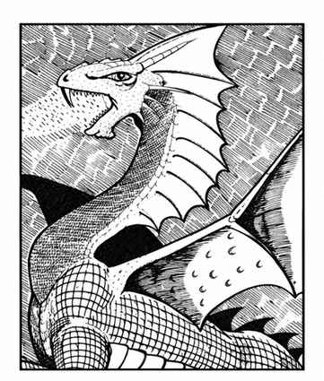

银龙 · Silver Dragon（Draco Nobilis Argentum）
 |
|
银龙选择山巅、云层附近等地点筑巢，据说它们也会出现在善龙王所在之处，或栖身于其他风域之后。银龙与金龙相似，能变形成动物或人类，常见形态是慈祥老人，偶尔也会化作美丽少女。
银龙在战斗中可用爪与利齿攻击，也可使用两种吐息之一：长 8 寸、底部直径 3 寸的寒冷锥，或长 5 寸、宽 4 寸、高 2 寸的麻痹气云。未通过对抗龙息豁免检定者会立即麻痹。
会施法的银龙最多可使用十个法术。幼龙与少年龙分别获得两个一环与两个二环法术；之后每进入一个年龄阶段，便增加一个更高环阶的法术：亚成年与青年阶段获得三环，成年与老年阶段获得四环，极老与古龙获得五环。因此，能施法的幼年银龙有两个一环法术，少年银龙则有两个一环和两个二环法术，以此类推。25% 的施法银龙拥有法术书，可以自行选择法术，而不只限于每环已知的少数法术。
上一节：红龙 · Red Dragon（Draco Conflagratio Horriblis）
下一节：白龙 · White Dragon（Draco Rigidus Frigidus）